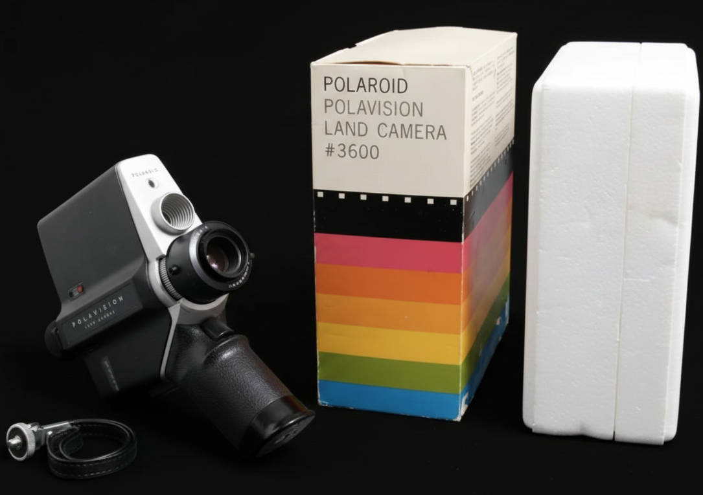

Corporate Information
About Polaroid Corporation
Polaroid is a company known for creating instant photography. They design cameras and film that let people take a picture and watch it develop within minutes. Their goal has always been to make photography easy, fun, and accessible for everyone. They were founded in 1937 by Edwin H. Land with their first commercial success being polarized sunglasses before launching the iconic instant camera in 1948.
What They Do
Polaroid creates instant cameras, film packs, and accessories. They focus on simple, user-friendly designs that let anyone capture memories quickly without needing special equipment or experience. The "point-and-shoot" nature of their cameras and the straightforward developing process make photography immediately accessible and fun.
Other Products:
{kind=link}
{kind=link}
{kind=link}
{kind=link}
Click a product to learn more about.
Our Mission
Polaroid’s mission is to bring people together through instant photography by
making capturing
memories simple, fast, and enjoyable.
Polaroid Information
Polaroid Corporation
Founded in Cambridge, Massachusetts
Developer of instant film and instant cameras since 1948